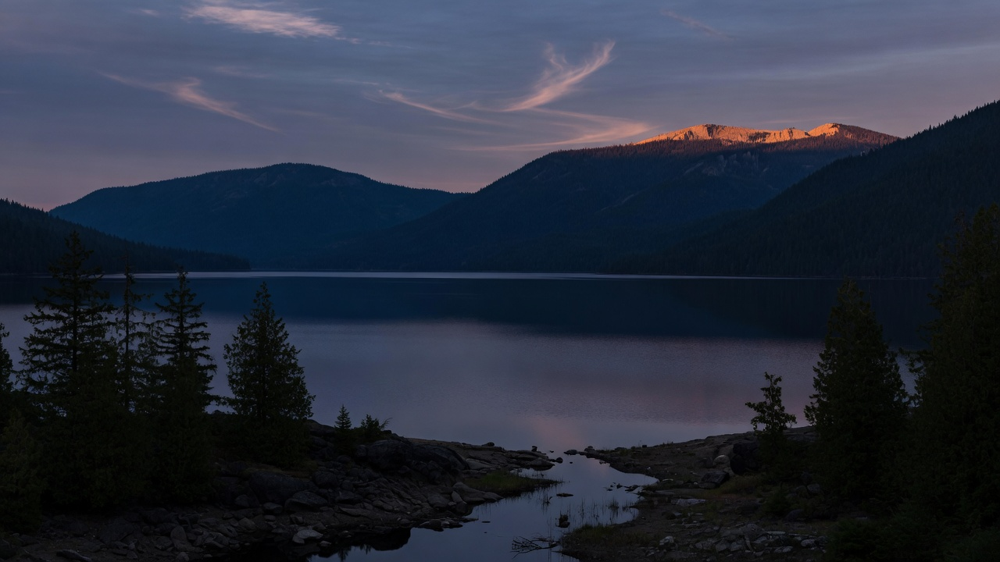

Homestead path
Thinking of making North Idaho your home? Neighbor notes on living here, then water, septic, winter, and listings.
Start here
Sagle · Sandpoint · Bonner County
Land, water, weather, and who shows up. Not a tourism brochure.
Thinking of making North Idaho your home? Neighbor notes on living here, then water, septic, winter, and listings.
Start hereLive map: fire watch, air quality, lakes, regional news.
Open boardITD road stills and Schweitzer mountain cams. Click a camera, watch on the right.
Open feedsPanida, the Hive, the winery, the field by the lake.
What's onLocal shops and trades, plus a Shutdown list when they close.
Directory